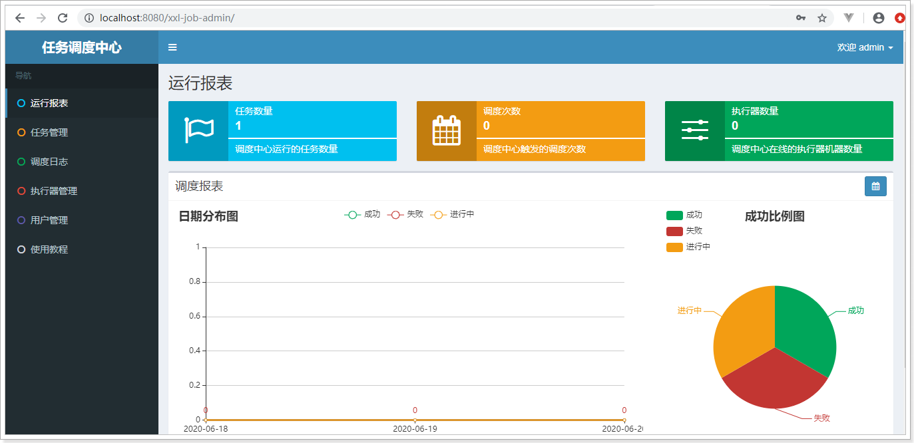
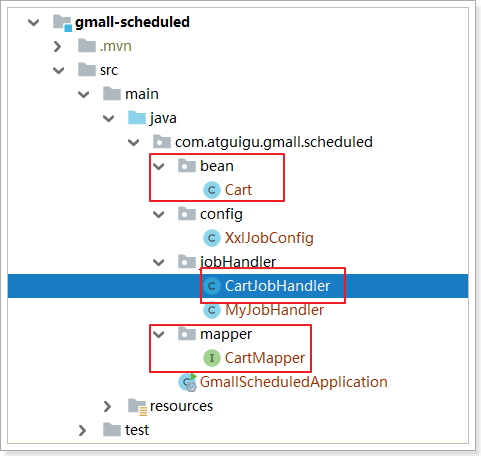
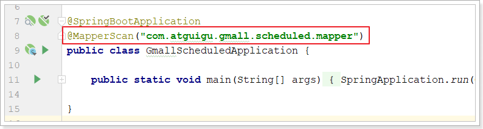

分布式定时任务功能¶
1. 定时任务¶
为什么需要定时任务？
**时间驱动处理场景：**整点发送优惠券，每天更新收益，每天刷新标签数据和人群数据。
**批量处理数据：**按月批量统计报表数据，批量更新短信状态，实时性要求不高。
**异步执行解耦：**活动状态刷新，数据同步，异步执行离线查询，与内部逻辑解耦。
实现方式：
- jdk方式：死循环、Timer定时器、JUC定时任务等
- springScheduling声明式定时任务：@EnableScheduling、@Scheduled
- 永远的经典：定时任务框架quartz
- 分布式定时任务：xxl-job（基于quartz）、elastic-Job（基于quartz）、Saturn（elastic-job的fork版本）
- MQ延时队列
等等。。。。。。。。。
各个解决方案的优缺点：
- jdk方式及SpringScheduling不支持高可用，不支持动态配置
- quartz支持高可用（非常麻烦，需要10几张表），不支持动态配置
- xxl-job支持高可用，动态配置以及任务的统一管理
2. 分布式定时任务xxl-Job¶
xxl（作者：许雪里）官方网站：https://www.xuxueli.com/xxl-job
分布式任务调度框架几乎是每个大型应用必备的工具。XXL-JOB是一个分布式任务调度平台，其核心设计目标是开发迅速、学习简单、轻量级、易扩展。现已开放源代码并接入多家公司线上产品线，开箱即用。
目前已有多家公司接入xxl-job，包括比较知名的大众点评，京东，优信二手车，北京尚德，360金融 (360)，联想集团 (联想)，易信 (网易)等等....
2.1. 项目结构¶
XXL-JOB支持通过 Web 页面对任务进行 CRUD 操作，支持动态修改任务状态、暂停/恢复任务，以及终止运行中任务，支持在线配置调度任务入参和在线查看调度结果。
源码参照github：https://github.com/xuxueli/xxl-job
码云：http://gitee.com/xuxueli0323/xxl-job
xxl-job-admin：调度中心 xxl-job-core：公共依赖 xxl-job-executor-samples：执行器Sample示例（选择合适的版本**执行器**，可直接使用，也可以参考其并将现有项目改造成执行器） ：xxl-job-executor-sample-springboot：Springboot版本管理执行器，推荐这种方式 ：xxl-job-executor-sample-spring：Spring版本，通过Spring容器管理执行器，比较通用 ：xxl-job-executor-sample-frameless：无框架版本 ：xxl-job-executor-sample-jfinal：JFinal版本，通过JFinal管理执行器 ：xxl-job-executor-sample-nutz：Nutz版本，通过Nutz管理执行器 ：xxl-job-executor-sample-jboot：jboot版本，通过jboot管理执行器
调度中心：统一**管理**任务调度平台上的调度任务，负责**触发**调度执行，并且提供任务管理平台。
执行器：负责接收“调度中心”的调度并**执行**；可直接部署执行器，也可以**将执行器集成到现有业务项目中**。
设计思想：
将调度行为抽象形成“调度中心”公共平台，而平台自身并不承担业务逻辑，“调度中心”负责发起调度请求。
将任务抽象成分散的JobHandler，交由“执行器”统一管理，“执行器”负责接收调度请求并执行对应的JobHandler中业务逻辑。
因此，“调度”和“任务”两部分可以相互解耦，提高系统整体稳定性和扩展性。
2.2. 部署调度中心¶
2.2.1. 初始化“调度数据库”¶
请下载项目源码并解压，获取 “调度数据库初始化SQL脚本” 并执行即可。
“调度数据库初始化SQL脚本” 位置为：/xxl-job/doc/db/tables_xxl_job.sql
调度中心支持集群部署，集群情况下各节点务必连接同一个mysql实例；如果mysql做主从，调度中心集群节点务必强制走主库。
导入mysql数据库，效果如下：
表说明（了解）：
- xxl_job_lock：任务调度锁表。
- xxl_job_group：执行器信息表，维护任务执行器信息。
- xxl_job_info：调度扩展信息表： 用于保存XXL-JOB调度任务的扩展信息，如任务分组、任务名、机器地址、执行器、执行入参和报警邮件等等。
- xxl_job_log：调度日志表： 用于保存XXL-JOB任务调度的历史信息，如调度结果、执行结果、调度入参、调度机器和执行器等等。
- xxl_job_log_report：调度日志报表：用户存储XXL-JOB任务调度日志的报表，调度中心报表功能页面会用到。
- xxl_job_logglue：任务GLUE日志：用于保存GLUE更新历史，用于支持GLUE的版本回溯功能。
- xxl_job_registry：执行器注册表，维护在线的执行器和调度中心机器地址信息。
- xxl_job_user：系统用户表。
2.2.2. 修改“调度中心”配置¶
调度中心配置文件：/xxl-job/xxl-job-admin/src/main/resources/application.properties
主要关注以下3部分配置：端口号、jdbc数据源、报警邮箱、xxl调度中心配置
### 端口号
server.port=8080
### 调度中心JDBC链接：链接地址请保持和 调度数据库的地址一致
spring.datasource.url=jdbc:mysql://172.16.116.100:3306/xxl_job?useUnicode=true&characterEncoding=UTF-8&autoReconnect=true&serverTimezone=Asia/Shanghai
spring.datasource.username=root
spring.datasource.password=root
spring.datasource.driver-class-name=com.mysql.jdbc.Driver
### 报警邮箱
spring.mail.host=smtp.qq.com
spring.mail.port=25
spring.mail.username=xxx@qq.com
spring.mail.password=xxx
spring.mail.properties.mail.smtp.auth=true
spring.mail.properties.mail.smtp.starttls.enable=true
spring.mail.properties.mail.smtp.starttls.required=true
spring.mail.properties.mail.smtp.socketFactory.class=javax.net.ssl.SSLSocketFactory
### 调度中心通讯TOKEN [选填]：非空时启用；
xxl.job.accessToken=
### 调度中心国际化配置 [必填]： 默认为 "zh_CN"/中文简体, 可选范围为 "zh_CN"/中文简体, "zh_TC"/中文繁体 and "en"/英文
xxl.job.i18n=zh_CN
## 调度线程池最大线程配置【必填】
xxl.job.triggerpool.fast.max=200
xxl.job.triggerpool.slow.max=100
### 调度中心日志表数据保存天数 [必填]：过期日志自动清理；限制大于等于7时生效，否则, 如-1，关闭自动清理功能；
xxl.job.logretentiondays=30
2.2.3. 打包运行”调度中心“¶
切换到xxl-job\xxl-job-admin项目目录下。
将项目编译打包：mvn clean package -Dmaven.skip.test=true
打包成功后，切换到target目录：cd target
启动调度中心：java -jar xxl-job-admin-2.2.0.jar 或者 java -jar -Dserver.port=8088 xxl-job-admin-2.2.0.jar
在浏览器访问：http://localhost:8080/xxl-job-admin/
默认登录账号 “admin/123456”, 登录后运行界面如下图所示。

至此“调度中心”项目已经部署成功。
2.2.4. ”调度中心“集群（可选）¶
调度中心支持集群部署，提升调度系统容灾和可用性。
调度中心集群部署时，几点要求和建议：
- DB配置保持一致；
- 集群机器时钟保持一致（单机集群忽视）；
- 建议：推荐通过nginx为调度中心集群做负载均衡，分配域名。调度中心访问、执行器回调配置、调用API服务等操作均通过该域名进行。
2.2.5. Docker镜像搭建调度中心¶
- 下载镜像
// Docker地址：https://hub.docker.com/r/xuxueli/xxl-job-admin/ (建议指定版本号)docker pull xuxueli/xxl-job-admin
- 创建容器并运行
docker run -p 8080:8080 -v /tmp:/data/applogs --name xxl-job-admin -d xuxueli/xxl-job-admin:{指定版本}
/**
* 如需自定义 mysql 等配置，可通过 "-e PARAMS" 指定
* 参数格式 PARAMS="--key=value --key2=value2" ；
* 配置项参考文件：/xxl-job/xxl-job-admin/src/main/resources/application.properties
* 如需自定义 JVM内存参数 等配置，可通过 "-e JAVA_OPTS" 指定，参数格式 JAVA_OPTS="-Xmx512m" ；
*/
docker run -e PARAMS="--spring.datasource.url=jdbc:mysql://127.0.0.1:3306/xxl_job?useUnicode=true&characterEncoding=UTF-8&autoReconnect=true&serverTimezone=Asia/Shanghai" -p 8080:8080 -v /tmp:/data/applogs --name xxl-job-admin -d xuxueli/xxl-job-admin:{指定版本}
2.3. 搭建执行器项目¶
执行器负责接收“调度中心”的调度并执行；在源码中作者已经贴心的给出了多种执行器项目示例（官方推荐的xxl-job-executor-sample-springboot项目为例部署），可根据你的喜好直接将其部署作为你自己的执行器，当然你也可以将执行器集成到现有业务项目中去
这里以集成到现有项目为例，将执行器集成到现有的项目中去。（参照xxl-job-executor-sample-springboot）
2.3.1. 添加xxl-job-core依赖¶
pom.xml中需要有这两个基本依赖
<dependency>
<groupId>org.springframework.boot</groupId>
<artifactId>spring-boot-starter-web</artifactId>
</dependency>
<dependency>
<groupId>com.xuxueli</groupId>
<artifactId>xxl-job-core</artifactId>
<version>2.2.0</version>
</dependency>
2.3.2. 修改执行器配置¶
执行器配置文件参照：
/xxl-job/xxl-job-executor-samples/xxl-job-executor-sample-springboot/src/main/resources/application.properties
配置内容如下：
# 端口号
server.port=8081
# no web
#spring.main.web-environment=false
# log config
#logging.config=classpath:logback.xml
### 调度中心部署根地址 [选填]：如调度中心集群部署存在多个地址则用逗号分隔。
### 执行器将会使用该地址进行"执行器心跳注册"和"任务结果回调"；为空则关闭自动注册；
xxl.job.admin.addresses=http://127.0.0.1:8080/xxl-job-admin
### 执行器通讯TOKEN [选填]：非空时启用；
xxl.job.accessToken=
### 执行器AppName [选填]：执行器心跳注册分组依据；为空则关闭自动注册
xxl.job.executor.appname=xxl-job-executor-sample
### 执行器注册[选填]：优先使用该配置作为注册地址，为空时使用内嵌服务”IP:PORT“ 作为注册地址。从而更灵活的支持容器类型执行器动态IP和动态映射端口问题。
xxl.job.executor.address=
### 执行器IP[选填]：默认为空表示自动获取IP，多网卡时可手动设置指定IP，该IP不会绑定Host仅作为通讯实用。
### 地址信息用于 "执行器注册" 和 "调度中心请求并触发任务"；
xxl.job.executor.ip=
### 执行器端口号[选填]：小于等于0则自动获取；默认端口为9999，单机部署多个执行器时，注意要配置不同执行器端口；
xxl.job.executor.port=9999
### 执行器运行日志文件存储磁盘路径 [选填] ：需要对该路径拥有读写权限；为空则使用默认路径；
xxl.job.executor.logpath=/data/applogs/xxl-job/jobhandler
### 执行器日志文件保存天数[选填]：过期日志自动清理, 限制值大于等于3时生效; 否则, 如-1, 关闭自动清理功能；
xxl.job.executor.logretentiondays=30
2.3.3. 添加执行器配置类¶
copy案例工程的配置文件：xxl-job\xxl-job-executor-samples\xxl-job-executor-sample-springboot\src\main\java\com\xxl\job\executor\core\config
到我们的工程中去，不需要作任何修改
2.3.4. 给执行器添加任务¶
/**
* XxlJob开发示例（Bean模式）
* 开发步骤：
* 1、在Spring Bean实例中，开发Job方法，方式格式要求为 "public ReturnT<String> execute(String param)"
* 2、为Job方法添加注解 "@XxlJob(value="自定义jobhandler名称", init = "JobHandler初始化方法", destroy = "JobHandler销毁方法")"，注解value值对应的是调度中心新建任务的JobHandler属性的值。
* 3、执行日志：需要通过 "XxlJobLogger.log()" 打印执行日志；
*/
@Component
public class MyJobHandler {
@XxlJob("myJobHandler")
public ReturnT<String> execute(String param) {
XxlJobLogger.log("使用XxlJobLogger打印执行日志，O(∩_∩)O");
System.out.println("我的任务执行了：" + param + "，线程：" + Thread.currentThread().getName());
return ReturnT.SUCCESS;
}
}
2.3.5. 执行器管理¶
点击进入”执行器管理”界面, 如下图：
"执行器列表" 中显示在线的执行器列表, 可通过"OnLine 机器"查看对应执行器的集群机器。
点击新增按钮，把执行器项目添加进来
新增/编辑”执行器管理“界面：
- AppName: 是每个执行器集群的唯一标示AppName, 执行器会周期性以AppName为对象进行自动注册。可通过该配置自动发现注册成功的执行器, 供任务调度时使用。
- 名称: 执行器的名称，因为AppName限制字母数字等组成,可读性不强，名称为了提高执行器的可读性。
- 注册方式：调度中心获取执行器地址的方式。
- 自动注册：执行器自动进行执行器注册，调度中心通过底层注册表可以动态发现执行器机器地址
- 手动录入：人工手动录入执行器的地址信息，多地址逗号分隔，供调度中心使用；
- 机器地址："注册方式"为"手动录入"时有效，支持人工维护执行器的地址信息。
添加完成后效果如下：
2.4.6. 配置执行器任务到调度中心¶
登录调度中心，点击下图所示“新建”按钮，新建示例任务。
参考下面截图中任务的参数配置，点击保存。
点击任务右侧 “执行一次” 按钮
再点击任务右侧”查询日志“按钮，到如下页面：
点击”执行日志“，看到如下页面：
查看项目代码控制台：
你也可以点击任务右侧的”启动“按钮执行多次，真正的启动任务：
此时任务状态是绿色”RUNNING“：
再去查看**调度日志**，可以看到很多执行日志的记录：
2.3.7. 执行器集群（可选）¶
执行器支持集群部署，提升调度系统可用性，同时提升任务处理能力。
执行器集群部署时，几点要求和建议：
- 执行器回调地址（xxl.job.admin.addresses）需要保持一致；执行器根据该配置进行执行器自动注册等操作。
- 同一个执行器集群内AppName（xxl.job.executor.appname）需要保持一致；调度中心根据该配置动态发现不同集群的在线执行器列表。
2.4. 任务界面详解¶
- 执行器：任务绑定的执行器，任务触发调度时将会自动发现注册成功的执行器, 实现任务自动发现功能；另一方面也可以方便的进行任务分组。每个任务必须绑定一个执行器, 可在 "执行器管理" 进行设置。
- 任务描述：任务的描述信息，便于任务管理。
- 路由策略：当执行器集群部署时，提供丰富的路由策略，包括：
- FIRST / LAST：固定选择第一个/最后一个机器。
- ROUND（轮询）/ RANDOM（随机）
- CONSISTENT_HASH（一致性HASH）：每个任务按照Hash算法固定选择某一台机器，且所有任务均匀散列在不同机器上。
- LEAST_FREQUENTLY_USED（最不经常使用）：使用频率最低的机器优先被选举。
- LEAST_RECENTLY_USED（最近最久未使用）：最久未使用的机器优先被选举。
- FAILOVER（故障转移）：按照顺序依次进行心跳检测，第一个心跳检测成功的机器选定为目标执行器并发起调度。
- BUSYOVER（忙碌转移）：按照顺序依次进行空闲检测，第一个空闲检测成功的机器选定为目标执行器并发起调度。
- SHARDING_BROADCAST(分片广播)：广播触发对应集群中所有机器执行一次任务，同时系统自动传递分片参数；可根据分片参数开发分片任务。
- Cron：触发任务执行的Cron表达式。
- 运行模式：
- BEAN模式：任务以JobHandler方式维护在执行器端；需要结合 "JobHandler" 属性匹配执行器中任务。
- GLUE模式(Java)：任务以源码方式维护在调度中心；该模式的任务实际上是一段继承自IJobHandler的Java类代码并 "groovy" 源码方式维护，它在执行器项目中运行，可使用@Resource/@Autowire注入执行器里中的其他服务。
- GLUE模式(Shell)：任务以源码方式维护在调度中心；该模式的任务实际上是一段 "shell" 脚本； GLUE模式(Python)：任务以源码方式维护在调度中心；该模式的任务实际上是一段 "python" 脚本； GLUE模式(PHP)：任务以源码方式维护在调度中心；该模式的任务实际上是一段 "php" 脚本； GLUE模式(NodeJS)：任务以源码方式维护在调度中心；该模式的任务实际上是一段 "nodejs" 脚本； GLUE模式(PowerShell)：任务以源码方式维护在调度中心；该模式的任务实际上是一段 "PowerShell" 脚本。
- JobHandler：运行模式为 "BEAN模式" 时生效，对应执行器中新开发的JobHandler类“@JobHandler”注解中自定义的value值。
- 阻塞处理策略：调度过于密集执行器来不及处理时的处理策略。
- 单机串行（默认）：调度请求进入单机执行器后，调度请求进入FIFO队列并以串行方式运行。
- 丢弃后续调度：调度请求进入单机执行器后，发现执行器存在运行的调度任务，本次请求将会被丢弃并标记为失败。
- 覆盖之前调度：调度请求进入单机执行器后，发现执行器存在运行的调度任务，将会终止运行中的调度任务并清空队列，然后运行本地调度任务。
- 子任务：每个任务都拥有一个唯一的任务ID(任务ID可以从任务列表获取)，当本任务执行结束并且执行成功时，将会触发子任务ID所对应的任务的一次主动调度。
- 任务超时时间：支持自定义任务超时时间，任务运行超时将会主动中断任务。
- 失败重试次数；支持自定义任务失败重试次数，当任务失败时将会按照预设的失败重试次数主动进行重试。
- 报警邮件：任务调度失败时邮件通知的邮箱地址，支持配置多邮箱地址，配置多个邮箱地址时用逗号分隔。
- 负责人：任务的负责人。
- 执行参数：任务执行所需的参数。
2.4.1. Cron表达式（触发器）¶
Cron Expressions是由七个子表达式组成的字符串，用于描述日程表的各个细节。这些子表达式用空格分隔，并表示：
- Seconds
- Minutes
- Hours
- Day-of-Month
- Month
- Day-of-Week
- Year (optional field) 可选
一个完整的Cron-Expressions的例子是字符串“0 0 12 ？* WED“ - 这意味着”每个星期三下午12:00“。
- 具体有效值：所有字段都有一组可以指定的有效值。 **秒**和**分**钟的数字0到59 **小时**的值0到23。 **日期**可以是1-31的任何值，但是您需要注意在给定的月份中有多少天！ **月份**可以指定为0到11之间的值，或者：JAN，FEB，MAR，APR，MAY，JUN，JUL，AUG，SEP，OCT，NOV和DEC。 **星期几**可以指定为1到7（1 =星期日）之间的值，或者使用字符串SUN，MON，TUE，WED，THU，FRI和SAT。
- 单个子表达式可以包含**范围（-）或列表（,）**。例如，可以用“MON-FRI”，“MON，WED，FRI”或甚至“MON-WED，SAT”代替前一个（例如“WED”）示例中的星期几字段。
- '* '：通配符可用于说明该字段的“每个”可能的值。因此，前一个例子的“月”字段中的“”字符仅仅是“每个月”。因此，“星期几”字段中的“*”显然意味着“每周的每一天”。
- '/'：字符可用于指定值的增量。例如，如果在“分钟”字段中输入“0/15”，则表示“每隔15分钟，从零开始”。如果您在“分钟”字段中使用“3/20”，则意味着“每隔20分钟，从三分钟开始” - 换句话说，它与“分钟”中的“3,23,43”相同领域。请注意“ /35”的细微之处并不代表“每35分钟” - 这意味着“每隔35分钟，从零开始” - 或者换句话说，与指定“0,35”相同。
- '?' ：字符是允许的**日期和星期几字段**。用于指定“无特定值”。只有在其中一个字段指定了值，另一个字段不指定时才能使用。这两个字段不能同时为*或者?
- ’L‘：字符允许用于月日和星期几字段，相当于最后。例如，“月”字段中的“L”表示“月的最后一天” - 1月31日，非闰年2月28日。如果在本周的某一天使用，它只是意味着“7”或“SAT”。但是如果在星期几的领域中再次使用这个值，就意味着“一个月的最后一个xxx日”，例如“6L”或“FRIL”都意味着“月的最后一个星期五”。您还可以指定从该月最后一天的偏移量，例如“L-3”，这意味着日历月份的第三个到最后一天。当使用'L'选项时，重要的是不要指定列表或值的范围，因为您会得到混乱/意外的结果。
- “W”：用于指定最近给定日期的工作日（星期一至星期五）。例如，如果要将“15W”指定为月日期字段的值，则意思是：“最近的平日到当月15日”。
- '＃'：用于指定本月的“第n个”XXX工作日。例如，“星期几”字段中的“6＃3”或“FRI＃3”的值表示“本月的第三个星期五”。
Cron Expressions示例
CronTrigger示例1 - 创建一个触发器的表达式，每5分钟就会触发一次
“0 0/5 * * * ?”
CronTrigger示例2 - 创建触发器的表达式，每5分钟触发一次，分钟后10秒（即上午10时10分，上午10:15:10等）。
“10 0/5 * * * ?”
CronTrigger示例3 - 在每个星期三和星期五的10:30，11:30，12:30和13:30创建触发器的表达式。
“0 30 10-13 ? * WED,FRI“
CronTrigger示例4 - 创建触发器的表达式，每个月5日和20日上午8点至10点之间每半小时触发一次。请注意，触发器将不会在上午10点开始，仅在8:00，8:30，9:00和9:30
“0 0/30 8-9 5,20 *？”
请注意，一些调度要求太复杂，无法用单一触发表示 - 例如“每上午9:00至10:00之间每5分钟，下午1:00至晚上10点之间每20分钟”一次。在这种情况下的解决方案是简单地创建两个触发器，并注册它们来运行相同的作业。
2.4.2. 运行模式 - 基于类的Bean模式¶
Bean模式任务，支持**基于类**的开发方式，每个任务对应一个Java类。
-
实现：
-
开发一个继承JobHandler类，实现其中任务方法。
-
手动通过如下方式注入到执行器容器：
XxlJobExecutor.registJobHandler("demoJobHandler", new DemoJobHandler()); -
优点：不限制项目环境，兼容性好。即使是无框架项目，如main方法直接启动的项目也可以提供支持，可以参考示例项目 “xxl-job-executor-sample-frameless”。
-
缺点：
-
每个任务需要占用一个Java类，造成类的浪费。
- 不支持自动扫描任务并注入到执行器容器，需要手动注入。
2.4.3. 运行模式 - 基于方法的Bean模式¶
入门案例使用的就是该方法
Bean模式任务，支持**基于方法**的开发方式，每个任务对应一个方法。
- 优点：
- 每个任务只需要开发一个方法，并添加”@XxlJob”注解即可，更加方便、快速。
- 支持自动扫描任务并注入到执行器容器。
- 缺点：要求Spring容器环境。
基于方法开发的任务，底层会生成JobHandler代理，和基于类的方式一样，任务也会以JobHandler的形式存在于执行器任务容器中。
2.4.4. 运行模式 - GLUE模式(Java)¶
任务以源码方式维护在调度中心，支持通过Web IDE在线更新，实时编译和生效，因此不需要指定JobHandler。
开发流程如下：
步骤一：调度中心，新建调度任务：运行模式选中 “GLUE模式(Java)”
点击保存，到任务列表。
步骤二：开发任务代码：选中指定任务，点击该任务右侧“GLUE”按钮，将会前往GLUE任务的Web IDE界面，在该界面支持对任务代码进行开发（也可以在IDE中开发完成后，复制粘贴到编辑中）。
版本回溯功能（支持30个版本的版本回溯）：在GLUE任务的Web IDE界面，选择右上角下拉框“版本回溯”，会列出该GLUE的更新历史，选择相应版本即可显示该版本代码，保存后GLUE代码即回退到对应的历史版本。
其他模式略。。。。
2.5. 架构图¶

XXL-JOB最终选择自研调度组件（早期调度组件基于Quartz）；一方面是为了精简系统降低冗余依赖，另一方面是为了提供系统的可控度与稳定性；
XXL-JOB中“调度模块”和“任务模块”完全解耦，调度模块进行任务调度时，将会解析不同的任务参数发起远程调用，调用各自的远程执行器服务。这种调用模型类似RPC调用，调度中心提供调用代理的功能，而执行器提供远程服务的功能。
并行调度：
调度采用线程池方式实现，避免单线程因阻塞而引起任务调度延迟。
XXL-JOB调度模块默认采用并行机制，在多线程调度的情况下，调度模块被阻塞的几率很低，大大提高了调度系统的承载量。
XXL-JOB的每个调度任务虽然在调度模块是并行调度执行的，但是任务调度传递到任务模块的“执行器”确实串行执行的，同时支持任务终止。
2.6. 生产问题¶
2.6.1. 访问令牌（AccessToken）¶
为提升系统安全性，调度中心和执行器进行安全性校验，双方AccessToken匹配才允许通讯；
调度中心和执行器，可通过配置项 “xxl.job.accessToken” 进行AccessToken的设置。
调度中心和执行器，如果需要正常通讯，只有两种设置；
- 设置一：调度中心和执行器，均不设置AccessToken；关闭安全性校验；
- 设置二：调度中心和执行器，设置了相同的AccessToken；
2.6.2. 避免任务重复执行¶
调度密集或者耗时任务可能会导致任务阻塞，集群情况下调度组件小概率情况下会重复触发； 针对上述情况，可以通过结合 “单机路由策略（如：第一台、一致性哈希）” + “阻塞策略（如：单机串行、丢弃后续调度）” 来规避，最终避免任务重复执行。
2.6.3. 故障转移 & 失败重试¶
一次完整任务流程包括”调度（调度中心） + 执行（执行器）”两个阶段。
- “故障转移”发生在调度阶段，在执行器集群部署时，如果某一台执行器发生故障，该策略支持自动进行Failover切换到一台正常的执行器机器并且完成调度请求流程。
- “失败重试”发生在”调度 + 执行”两个阶段，支持通过自定义任务失败重试次数，当任务失败时将会按照预设的失败重试次数主动进行重试；
2.6.4. 执行器灰度上线¶
调度中心与业务解耦，只需部署一次后常年不需要维护。但是，执行器中托管运行着业务作业，作业上线和变更需要重启执行器，尤其是Bean模式任务。 执行器重启可能会中断运行中的任务。但是，XXL-JOB得益于自建执行器与自建注册中心，可以通过灰度上线的方式，避免因重启导致的任务中断的问题。
步骤如下：
- 1、执行器改为手动注册，下线一半机器列表（A组），线上运行另一半机器列表（B组）；
- 2、等待A组机器任务运行结束并编译上线；执行器注册地址替换为A组；
- 3、等待B组机器任务运行结束并编译上线；执行器注册地址替换为A组+B组； 操作结束；
2.6.5. 过期处理策略¶
任务调度错过触发时间时的处理策略：
- 可能原因：服务重启；调度线程被阻塞，线程被耗尽；上次调度持续阻塞，下次调度被错过；
- 处理策略：
- 过期超5s：本次忽略，当前时间开始计算下次触发时间
- 过期5s内：立即触发一次，当前时间开始计算下次触发时间
2.7. 分片广播任务¶
执行器集群部署时，任务路由策略选择”分片广播”情况下，一次任务调度将会广播触发对应集群中所有执行器执行一次任务，同时系统自动传递分片参数；可根据分片参数开发分片任务；
该特性适用场景如：
- 1、分片任务场景：10个执行器的集群来处理10w条数据，每台机器只需要处理1w条数据，耗时降低10倍；
- 2、广播任务场景：广播执行器机器运行shell脚本、广播集群节点进行缓存更新
“分片广播” 以执行器为维度进行分片，支持动态扩容执行器集群从而动态增加分片数量，协同进行业务处理；在进行大数据量业务操作时可显著提升任务处理能力和速度。
“分片广播” 和普通任务开发流程一致，不同之处在于可以获取分片参数，获取分片参数进行分片业务处理。
@JobHandler(value="shardingJobHandler")
@Service
public class ShardingJobHandler extends IJobHandler {
@Override
public ReturnT<String> execute(String param) throws Exception {
// 分片参数
ShardingUtil.ShardingVO shardingVO = ShardingUtil.getShardingVo();
XxlJobLogger.log("分片参数：当前分片序号 = {}, 总分片数 = {}", shardingVO.getIndex(), shardingVO.getTotal());
// 业务逻辑
for (int i = 0; i < shardingVO.getTotal(); i++) {
if (i == shardingVO.getIndex()) {
XxlJobLogger.log("第 {} 片, 命中分片开始处理", i);
} else {
XxlJobLogger.log("第 {} 片, 忽略", i);
}
}
return SUCCESS;
}
}
3. 使用定时任务改造购物车¶
由于购物车采用的是同步操作redis，异步操作mysql。即使mysql操作失败，只要redis操作成功，依然不影响功能的使用。但是，如果不进行定期的数据同步处理，则可能导致mysql数据存在严重偏差，失去了数据分析价值。接下来，我们就使用xxl-job定时同步购物车数据。
3.1. 异步执行失败记录到redis¶
改造CartAsyncExceptionHandler，把异常用户记录到redis
@Slf4j
@Component
public class CartAsyncExceptionHandler implements AsyncUncaughtExceptionHandler {
@Autowired
private StringRedisTemplate redisTemplate;
private static final String KEY = "cart:async:exception";
@Override
public void handleUncaughtException(Throwable throwable, Method method, Object... objects) {
log.error("异步调用发生异常，方法：{}，参数：{}，异常信息：{}", method, objects, throwable.getMessage());
// 把异常用户信息存入redis
String userId = objects[0].toString();
BoundListOperations<String, String> listOps = this.redisTemplate.boundListOps(KEY);
listOps.leftPush(userId);
}
}
此时为了让异步异常处理器可以获取到异常用户信息，要求CartAsyncService中的每个异步方法第一个参数必须时userId（或者是userKey）：
3.2. 添加任务同步购物车数据¶
定时任务要进行数据同步必然要获取redis中的异常用户信息，并查询购物车数据同步到mysql数据库，需要购物车系统提供数据同步接口（根据用户id同步用户数据的接口），如果这样就需要把定时任务工程也放入nacos并通过feign来调用。这里为了省事直接在定时任务工程中引入了redis以及mapper接口：

- 在定时任务工程pom.xml中引入相关依赖：
<dependency>
<groupId>org.springframework.boot</groupId>
<artifactId>spring-boot-starter-data-redis</artifactId>
</dependency>
<dependency>
<groupId>com.baomidou</groupId>
<artifactId>mybatis-plus-boot-starter</artifactId>
</dependency>
<dependency>
<groupId>mysql</groupId>
<artifactId>mysql-connector-java</artifactId>
</dependency>
<dependency>
<groupId>org.projectlombok</groupId>
<artifactId>lombok</artifactId>
</dependency>
<dependency>
<groupId>org.apache.commons</groupId>
<artifactId>commons-lang3</artifactId>
</dependency>
<dependency>
<groupId>com.alibaba</groupId>
<artifactId>fastjson</artifactId>
<version>1.2.62</version>
</dependency>
- 在定时任务工程的application.properties中添加了相关配置：
spring.redis.host=172.16.116.100
spring.datasource.driver-class-name=com.mysql.jdbc.Driver
spring.datasource.url=jdbc:mysql://172.16.116.100:3306/guli_cart
spring.datasource.username=root
spring.datasource.password=root
-
相关的mapper接口和实体类从购物车系统copy过来
-
在启动类上添加@MapperScan("com.atguigu.gmall.scheduled.mapper")

- 添加CartJobHandler任务：
@Component
public class CartJobHandler {
@Autowired
private StringRedisTemplate redisTemplate;
@Autowired
private CartMapper cartMapper;
private static final String KEY = "cart:async:exception";
private static final String KEY_PREFIX = "cart:info:";
@XxlJob("cartJobHandler")
public ReturnT<String> executor(String param){
BoundListOperations<String, String> listOps = this.redisTemplate.boundListOps(KEY);
// 如果redis中出现异常的用户为空，则直接返回
if (listOps.size() == 0){
return ReturnT.SUCCESS;
}
// 获取第一个失败的用户
String userId = listOps.rightPop();
while (StringUtils.isNotBlank(userId)){
// 先删除
this.cartMapper.delete(new UpdateWrapper<Cart>().eq("user_id", userId));
// 再查询该用户redis中的购物车
BoundHashOperations<String, Object, Object> hashOps = this.redisTemplate.boundHashOps(KEY_PREFIX + userId);
List<Object> cartJsons = hashOps.values();
// 如果该用户购物车数据为空，则直接进入下次循环
if (CollectionUtils.isEmpty(cartJsons)){
continue;
}
// 最后，如果不为空，同步到mysql数据库
cartJsons.forEach(cartJson -> {
this.cartMapper.insert(JSON.parseObject(cartJson.toString(), Cart.class));
});
// 下一个用户
userId = listOps.rightPop();
}
return ReturnT.SUCCESS;
}
}
- 在调度中心添加任务并启动任务：
本文总阅读量次